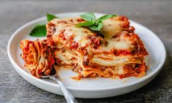

Lasagna Bolognese

Description
This delicious Classic Lasagna Bolognese Recipe is layered with homemade pasta, bechamel, and bolognese for an unforgettable meal. Consequently, If you’re looking to get a lasagna recipe straight from Italy, then this version is exactly that.
Ingredients
- Pasta - Homemade pasta works the best for this recipe
- Bechamel - Bechamel sauce is used between the layers of the lasagna
- Bolognese - Bolognese sauce made with mirepoix, garlic, olive oil, pork, beef, and tomatoes
- Cheese - We will use a combination of Provolone, Parmigiano Reggiano and Mozzarella